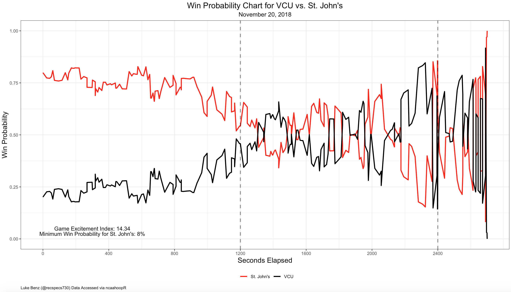

Analysis
Below is a histogram of the Game Excitement Index for the 2018-19 season (for all games play-by-play data is avaiable). Through the first 6 weeks of the season, GEI has a mean of roughly 3.6 and standard deviation of about 2.6. GEI appears to follow some sort of Gamma distribution. The distribution is skewed right, with over 62 percent of games registing GEI less than 4.

We can see looking by the plot above that very few games have GEI greater than 10. In fact, 10 is the 99th percentile for GEI, and through 12/21/2018, only 23 games have achieved such a mark. Below are the most exciting games of the season.
| team | opponent | date | location | team_score | opp_score | gei |
|---|---|---|---|---|---|---|
| St John’s | VCU | 2018-11-20 | N | 87 | 86 | 14.34 |
| Ga Southern | UL Monroe | 2019-01-10 | H | 79 | 78 | 13.95 |
| Gardner-Webb | Presbyterian | 2019-02-09 | A | 101 | 103 | 12.99 |
| Samford | Wofford | 2019-01-24 | A | 106 | 107 | 12.98 |
| Hartford | Maine | 2019-01-16 | A | 77 | 76 | 12.79 |
| Jacksonville | North Alabama | 2019-01-16 | H | 88 | 91 | 12.53 |
| Kentucky | Seton Hall | 2018-12-08 | N | 83 | 84 | 12.49 |
| NC A&T | Howard | 2019-02-16 | A | 85 | 81 | 12.28 |
| Hampton | Radford | 2019-02-07 | H | 98 | 101 | 11.80 |
| Georgetown | Providence | 2019-01-12 | H | 96 | 90 | 11.50 |
| Cent Conn St | Maine | 2018-12-22 | A | 93 | 90 | 11.39 |
| CSU Northridge | Rider | 2018-12-23 | N | 94 | 86 | 11.37 |
| Louisville | Michigan State | 2018-11-27 | H | 82 | 78 | 11.27 |
| Sacramento St | Weber State | 2019-02-21 | H | 65 | 57 | 11.27 |
| Iowa | Rutgers | 2019-02-16 | A | 71 | 69 | 11.20 |
| CSU Fullerton | Long Beach State | 2019-01-19 | A | 92 | 90 | 11.16 |
| Campbell | UNC Wilmington | 2018-11-06 | H | 97 | 93 | 11.14 |
| Hampton | Norfolk State | 2018-11-29 | A | 89 | 94 | 11.10 |
| Dayton | St. Bonaventure | 2019-01-19 | A | 89 | 86 | 11.06 |
| Seton Hall | St. John’s | 2018-12-29 | H | 76 | 74 | 11.03 |
| Sam Houston | Abilene Christian | 2019-02-09 | A | 90 | 85 | 10.98 |
| UMass Lowell | Wagner | 2018-11-10 | H | 88 | 84 | 10.86 |
| Georgetown | St. John’s | 2019-01-05 | H | 94 | 97 | 10.83 |
| Robert Morris | Fairleigh Dickinson | 2019-02-02 | A | 94 | 97 | 10.81 |
| Ga Southern | South Alabama | 2019-01-19 | A | 88 | 86 | 10.80 |
| Columbia | Fordham | 2018-11-18 | A | 69 | 70 | 10.79 |
| BYU | Illinois State | 2018-11-28 | A | 89 | 92 | 10.75 |
| N Kentucky | UIC | 2019-02-03 | A | 67 | 69 | 10.74 |
| Auburn | South Carolina | 2019-01-22 | A | 77 | 80 | 10.72 |
| SMU | Wright State | 2018-11-21 | N | 77 | 76 | 10.72 |
| Air Force | San José St | 2019-01-26 | A | 73 | 71 | 10.62 |
| Columbia | Delaware | 2018-12-02 | H | 86 | 87 | 10.59 |
| Texas State | UTSA | 2018-12-01 | A | 69 | 68 | 10.52 |
| CSU Bakersfield | UMKC | 2019-01-17 | H | 74 | 73 | 10.51 |
| Santa Clara | USC | 2018-12-18 | H | 102 | 92 | 10.48 |
| Boston College | Providence | 2018-12-04 | H | 95 | 100 | 10.47 |
| E Kentucky | Northern Kentucky | 2018-12-08 | H | 76 | 74 | 10.46 |
| LIU Brooklyn | Milwaukee | 2018-11-20 | A | 87 | 92 | 10.44 |
| Bowling Green | Ohio | 2019-02-22 | A | 87 | 92 | 10.42 |
| Bryant | Sacred Heart | 2019-02-14 | H | 104 | 105 | 10.42 |
| Hofstra | William & Mary | 2019-01-10 | A | 93 | 90 | 10.37 |
| Akron | Central Michigan | 2019-01-08 | A | 86 | 88 | 10.35 |
| Hawai’i | UC Irvine | 2019-01-23 | H | 74 | 75 | 10.35 |
| Iona | Long Beach State | 2018-11-19 | N | 85 | 86 | 10.32 |
| Cent Arkansas | Stephen F. Austin | 2019-01-30 | A | 99 | 105 | 10.32 |
| Austin Peay | Eastern Illinois | 2019-01-19 | A | 83 | 85 | 10.26 |
| SIUE | Tennessee State | 2019-02-21 | A | 85 | 84 | 10.26 |
| Cal | Stanford | 2019-02-03 | H | 62 | 73 | 10.26 |
| Towson | UMBC | 2018-12-11 | A | 80 | 76 | 10.25 |
| Creighton | Georgetown | 2019-01-21 | A | 91 | 87 | 10.25 |
| BYU | UNLV | 2018-12-15 | N | 90 | 92 | 10.24 |
| Fairfield | LIU Brooklyn | 2018-11-13 | H | 87 | 89 | 10.22 |
| ETSU | Wofford | 2019-02-07 | H | 76 | 78 | 10.20 |
| CSU Northridge | Yale | 2019-01-05 | H | 83 | 84 | 10.19 |
| American | UMBC | 2018-11-24 | A | 73 | 69 | 10.18 |
| UNC Wilmington | Towson | 2019-01-31 | H | 76 | 77 | 10.17 |
| Charleston | William & Mary | 2019-02-21 | A | 84 | 86 | 10.17 |
| Marquette | St. John’s | 2019-02-05 | H | 69 | 70 | 10.11 |
| Iona | Niagara | 2019-02-10 | H | 79 | 76 | 10.08 |
| Arkansas State | Troy | 2019-01-12 | H | 85 | 90 | 10.06 |
| Houston Baptist | Nicholls | 2019-01-12 | A | 76 | 77 | 10.05 |
| Abil Christian | Pacific | 2018-11-23 | A | 73 | 71 | 10.04 |
| Denver | Wyoming | 2018-12-11 | A | 90 | 87 | 10.02 |
| Bucknell | Holy Cross | 2019-02-16 | A | 71 | 72 | 10.02 |
| N Illinois | Northern Kentucky | 2018-11-09 | H | 85 | 88 | 10.01 |
Let’s take a closer look at the most exciting game of the season, VCU vs. St. John’s, an OT thriller in the Legend’s Classic championship game, during Thanksgiving “Feast Week”. We can make the win probability chart for the game using the function gg_wp_chart(), as follows.
gg_wp_chart(game_id = 401096927, home_col = "black", away_col = "red")
Next, we can look at which teams have the highest and lowest average GEI. Due to the skewed nature of the GEI distribution, it probably makes most sense to rank teams by median GEI. We can also classify games into a few different categories based on their GEI:
- Heart Pounders: GEI > 8
- Thrillers: 4 < GEI \(\leq\) 8
- Average Games: 1 < GEI \(\leq\) 4
- Duds: GEI < 1
Most Exciting Teams
| team | median_gei | mean_gei | max_gei | min_gei | heart_pounders | thrillers | average_games | duds |
|---|---|---|---|---|---|---|---|---|
| Duquesne | 6.50 | 5.72 | 9.28 | 0.37 | 6 | 13 | 6 | 2 |
| Pepperdine | 6.48 | 5.94 | 9.49 | 0.54 | 1 | 5 | 0 | 1 |
| Seton Hall | 6.46 | 5.78 | 12.49 | 0.74 | 4 | 13 | 7 | 1 |
| Houston Baptist | 6.43 | 5.37 | 10.05 | 0.30 | 3 | 12 | 5 | 2 |
| Lafayette | 6.29 | 5.50 | 9.79 | 0.59 | 6 | 10 | 8 | 1 |
| Quinnipiac | 6.05 | 5.39 | 9.50 | 0.28 | 4 | 13 | 6 | 1 |
| Georgetown | 6.04 | 5.81 | 11.50 | 0.73 | 6 | 6 | 4 | 3 |
| American | 5.95 | 5.79 | 10.18 | 0.64 | 7 | 9 | 4 | 3 |
| Belmont | 5.91 | 5.31 | 8.13 | 1.04 | 1 | 7 | 3 | 0 |
| Ga Southern | 5.80 | 5.48 | 13.95 | 1.35 | 3 | 15 | 8 | 0 |
| Long Beach St | 5.77 | 5.56 | 11.16 | 0.56 | 5 | 13 | 7 | 1 |
| Iona | 5.74 | 5.61 | 10.32 | 1.06 | 6 | 10 | 9 | 0 |
| Samford | 5.71 | 5.63 | 12.98 | 0.68 | 4 | 4 | 6 | 1 |
| Cent Michigan | 5.67 | 5.35 | 10.35 | 0.38 | 5 | 4 | 4 | 2 |
| LIU Brooklyn | 5.66 | 6.01 | 10.44 | 1.89 | 5 | 18 | 3 | 0 |
| Penn | 5.65 | 5.07 | 9.44 | 0.74 | 4 | 10 | 9 | 1 |
| Canisius | 5.64 | 5.17 | 9.80 | 0.91 | 2 | 18 | 6 | 1 |
| Niagara | 5.61 | 5.59 | 9.92 | 1.50 | 3 | 13 | 5 | 0 |
| CSU Northridge | 5.58 | 5.23 | 11.37 | 0.62 | 4 | 13 | 7 | 2 |
| San Francisco | 5.57 | 5.31 | 8.42 | 1.95 | 3 | 4 | 3 | 0 |
Least Exciting Teams
| team | median_gei | mean_gei | max_gei | min_gei | heart_pounders | thrillers | average_games | duds |
|---|---|---|---|---|---|---|---|---|
| MD-E Shore | 0.73 | 1.51 | 5.35 | 0.23 | 0 | 2 | 6 | 11 |
| Chicago State | 0.78 | 1.93 | 8.19 | 0.25 | 1 | 4 | 5 | 13 |
| Gonzaga | 0.80 | 2.23 | 9.80 | 0.18 | 1 | 4 | 8 | 15 |
| Savannah State | 0.80 | 2.98 | 8.91 | 0.26 | 2 | 3 | 2 | 8 |
| Coppin State | 1.00 | 2.40 | 8.29 | 0.30 | 1 | 3 | 5 | 8 |
| Miss Valley St | 1.02 | 1.50 | 6.81 | 0.32 | 0 | 1 | 6 | 7 |
| S Carolina St | 1.04 | 2.42 | 7.91 | 0.39 | 0 | 4 | 4 | 7 |
| Saint Mary’s | 1.05 | 1.99 | 9.49 | 0.32 | 1 | 1 | 10 | 5 |
| AR-Pine Bluff | 1.31 | 2.74 | 7.53 | 0.30 | 0 | 6 | 5 | 7 |
| Duke | 1.41 | 3.02 | 9.80 | 0.25 | 2 | 7 | 12 | 6 |
| Oral Roberts | 1.48 | 3.26 | 9.46 | 0.56 | 2 | 2 | 6 | 3 |
| Delaware State | 1.53 | 2.58 | 8.56 | 0.26 | 2 | 1 | 11 | 4 |
| UConn | 1.61 | 2.69 | 7.50 | 0.55 | 0 | 5 | 9 | 4 |
| Florida A&M | 1.62 | 2.43 | 6.49 | 0.39 | 0 | 3 | 8 | 4 |
| Kennesaw State | 1.63 | 2.66 | 9.00 | 0.41 | 1 | 2 | 5 | 5 |
| UVA | 1.64 | 2.43 | 6.54 | 0.32 | 0 | 5 | 11 | 9 |
| Cincinnati | 1.66 | 2.58 | 8.40 | 0.30 | 2 | 2 | 7 | 7 |
| Auburn | 1.72 | 3.26 | 10.72 | 0.24 | 1 | 7 | 10 | 7 |
| Murray State | 1.73 | 2.58 | 7.32 | 0.43 | 0 | 3 | 13 | 2 |
| SMU | 1.75 | 3.35 | 10.72 | 0.39 | 1 | 6 | 8 | 4 |
Perhaps not suprisingly, many of the least exciting teams so far are MEAC and SWAC teams, often scheduling buy-games (and getting blown-out) against high-major opponents. Teams like Duke, UVA, and Texas Tech are likely on the list for the same reason–scheduling and destroying many weaker opponents. Duke’s appearance on this list is actually a testament to it’s domiance this season. Even having Kentucky, Texas Tech, Auburn, Indiana, and Gonzaga on it’s non-conference schedule, it’s level of dominance means Duke’s win probability charts flatline early and are marked by low GEI scores. This also shows a limitation of GEI to show what is exciting. Against most opponents, a team like Duke will still be fairly heavily favored when the score is close and as such, won’t be able to wrack up as high of a Game Excitement Index. Perhaps at this stage of the season, GEI is best used to rank mid-major teams, and it would be wise to wait until conference play begins to evalaute high-major teams on this metric.
GEI Game Types by Conference

Most Exciting Game by Date
Finally, one can look at the most exciting game on each day of the season. I got the idea for the below chart from Jordan Sperber’s look at the best ranked games each day per KenPom FanMatch, which seeks to quantify the quality of a game before it is played.

By no means is GEI meant to be a perfect metric, and it might fail to capture important aspects of the game that a given individual might find to be exciting. That being said, I think it does a pretty good job of capturing a lot of what makes games fun to watch, and helps raise awareness of a lot of good mid-major basketball that often flies under the radar. I’ll keep updating these materials as conference play kicks off in the coming weeks to see if/how the metric changes, but for now, we can sit back, relax, and appreciate some good college hoops.